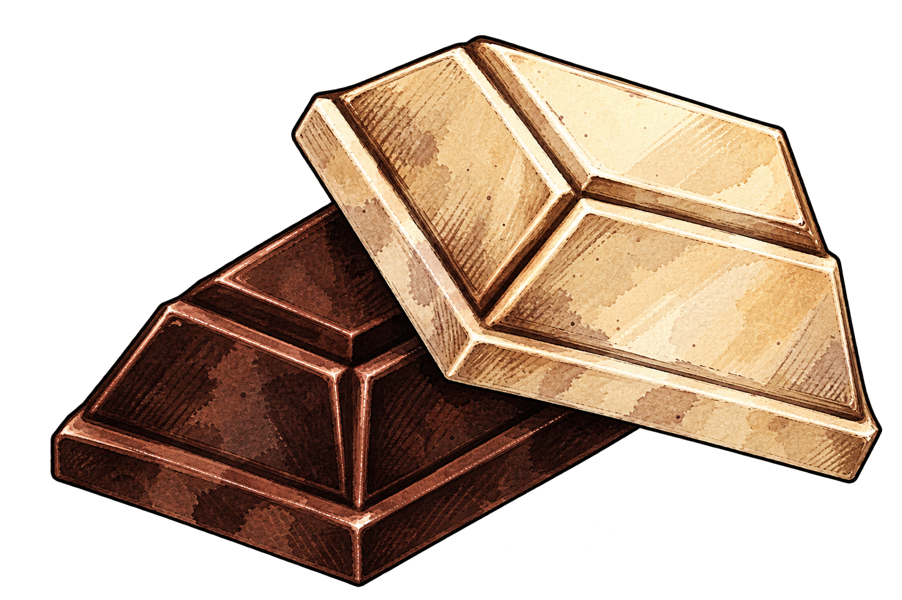
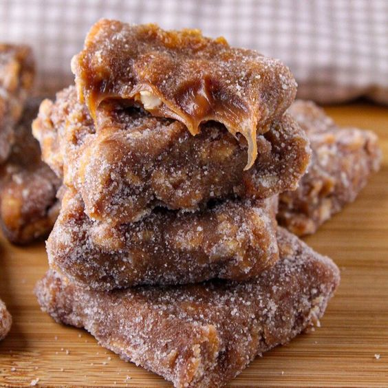

O conteúdo desta receita é temporário, infelizmente o escritor perdeu as anotações da patrona e até ela nos agraciar com os textos novamente permanecerá nesta forma incompleta.
Se o amendoim ainda não estiver torrado, torre-o numa frigideira ou no forno. Retire as peles e reserve.
Numa panela de fundo grosso, coloque o açúcar e a água. Mexa até dissolver e deixe cozinhar até obter uma calda dourada, semelhante a caramelo claro.
Acrescente o amendoim e a manteiga. Misture bem para envolver todos os amendoins no caramelo.
Acrescente o leite condensado e mexa continuamente em lume médio-baixo. Cozinhe até a mistura engrossar e começar a desprender do fundo da panela, como um brigadeiro mais firme.
Despeje a mistura numa forma untada com manteiga ou forrada com papel vegetal. Espalhe uniformemente e nivele a superfície.
Deixe arrefecer completamente à temperatura ambiente. Depois, corte em quadradinhos e passe-os por açúcar refinado ou em pó.
